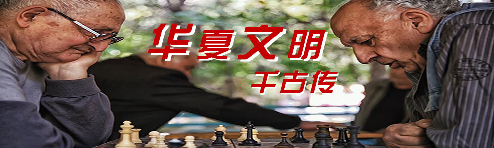

首页
非遗活动
非遗项目
传承人物
互动交流
走进网络，畅聊兴趣爱好与生活点滴。
非物质文化遗产是指被各社区，群体，视为其文化遗产组成部分的各种传统文化表现形式，以及与传统文化表现形式相关的实物和场所，这些文化表现形式包括但不限于口头传统和表现形式，表演艺术，社会实践，仪式节庆活动，有关自然界和宇宙的知识和实践，以及传统手工艺等，非物质文化遗产在世代相传中不断地被再创造，为社区和群体提供认同感和持续感，从而增强对文化多样性和人类创造力的尊重。这是一场让人们期盼已久的论坛盛会，许多重量级的非遗研究学者们济济一堂，共商非遗传播大计。现场的讨论非常热烈，每一个参会者都怀着激动的心情，表述自己的观点和看法。这是发生在2022年10月15日，以“丝路和田·千年传承 — 非遗融合·文创跨界”为主题的和田非遗文创对话活动（论坛）上的一幕。该论坛在北京市东城区德必天坛WE文创园区成功举办，采用了线上线下同步参与的方式，由和田地委宣传部、和田地区文化体育广播电视和旅游局主办，北京设计学会协办，北京创悦文化发展有限公司承办。
其中，参与现场的嘉宾有中国民族民间工艺美术家协会非遗传承与创新发展工作委员会常务副主任兼秘书周建彤，北京服装学院长聘二级教授、博士生导师宁俊，中国非物质文化遗产保护协会职业教育专业委员会常务副主任冯午生，光明日报光明网创新发展中心主任、光明文创负责人边保京，中央美院高级工艺师朱景华。这次论坛的举办方式，主要是以研讨会+圆桌会议形式开展，论坛核心主题是以延续2022第四届和田非遗文创大赛“非遗融合·文创跨界”的主题，通过对话活动的形式，探讨和田非遗文创的广度和深度的共创开发模式，提升和田文创产品设计水平，推动非遗文创产品的可持续发展，丰富和田非遗产品的市场，促进非遗文化产业化、专业化、品牌化平台化发展。和田玉天下闻名。早在丝绸之路举起之际，和田便已经成为南道上的重镇，具有丰富的非遗文化资源及深厚的历史积淀，荟萃几千年历史文明的精华，创造了辉煌灿烂的古代文明，为进一步推进和田文化多元化发展，以市场为导向促进高质量文创产品研发，形成以文促旅、以旅兴文、文旅融合的发展新格局，论坛围绕如何提取和田非遗文创IP元素、非遗文创融合发展中要注意的问题等相关问题展开积极讨论。深入开展文化润疆”为指导方向。与会嘉宾不仅结合自身的非遗和文创经验，充分的研讨了论坛“非遗融合·文创跨界”的主题，同时也为和田非遗文创大赛及日后持续性的文创产品开发提出了大量建设性意见。相信越来越多人的努力，非遗融合、文创跨界与全国的文创人才携起手来，一定可以更好的推广非遗文化，让其暴发新的生机与活力。
留言板:
发布
评论区:
**：周祺好帅
*：一楼大大说的对！！！！尖锐爆鸣声！
心如止水：说得对。。。